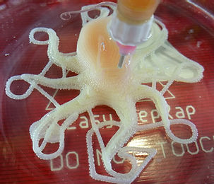
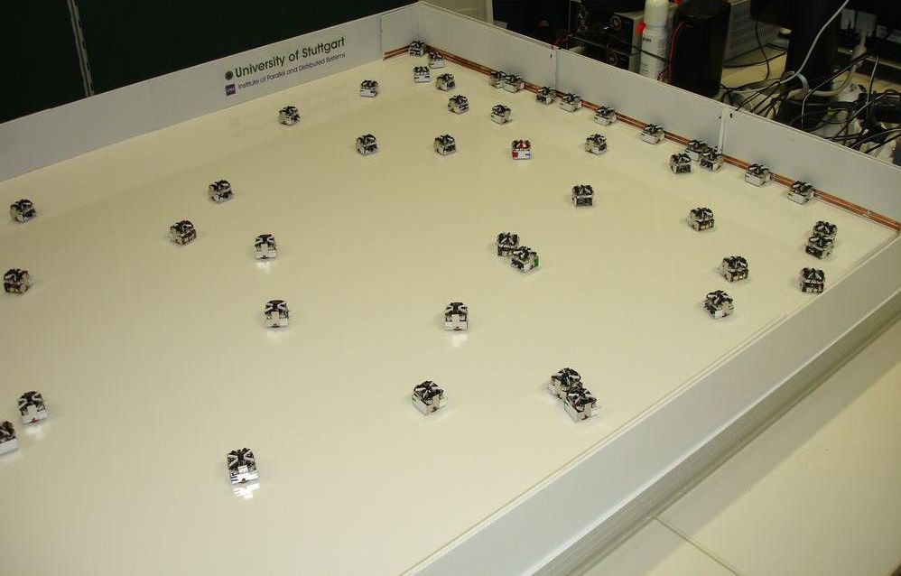
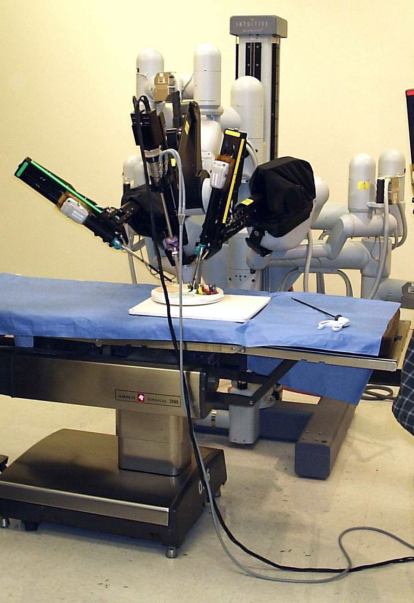
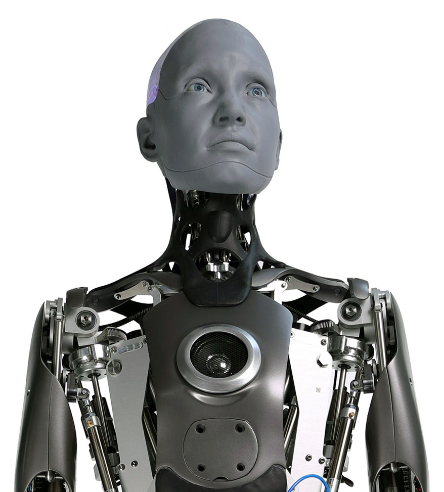

This page showcases some of the robotic technologies currently in development. These
technologies are not yet widely available, but prototypes exist and are actively being
improved. It is more than likely that some of these technologies will become commonplace
in our lifetime.
Soft Robotics

Soft robotics is the creation of robots out of flexible materials to mimic
living tissue. This allows the robots to handle more fragile items, and seem
more lifelike. This technology is likely to be applied in healthcare, and may
eventually be applied to android technology, allowing the androids to seem more
similar to humans.
[1]
Swarm Robotics

Swarm robotics is based on the behavior of social insects such as ants or bees. Though
the average person is unlikely to have use for this type of robot system in their
everyday life, this field will have a major impact on industries such as agriculture,
medical, and military.
[2]
Medical Robotics

Medical robots are already in use, to some extent, by medical providers to much of the
general public. Continued advancements in this field will allow higher rates of success
during medical procedures, less invasive procedures, and more easily accessible medical
care. Medical robotics is bolstered by several other fields of robotics, whose discoveries
can often be adjusted and re-applied to suit the medical field.
[3]
Humanoid Robotics

Androids (also known as humanoid robots) have long been a desire of those interested in
robotics. Already models exist which can mimic human movement, speech, and other actions.
As other robotics fields advance (particularly soft robotics) these machines become more and
more lifelike. Future applications as these robots become more readily available include
customer service, education, and companionship.
[4]